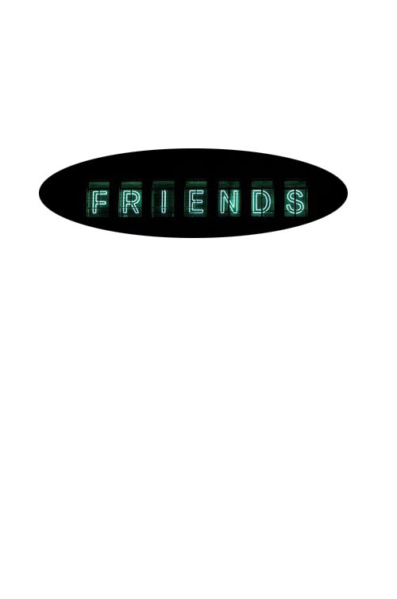
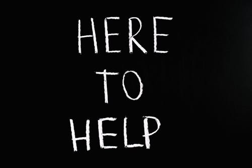

אז מה אתה מחפש בבת זוג שלך?
כלומר איזה תכונות היית רוצה שיהיו בה

צריך דברים ספציפיים!
כגון:
- אני מחפש אישה רגועה שאפשר לשבת איתה על כוס תה ודבר על החייים
- אני מחפש אישה עם אופי מטורף שנוכל לטרוף את העולם לחרוש בשישי את כל המסיבות
- אני רוצה מישהי שתוכל לעשות לי סדר בחיים ותתן לי ראש שקט(למרות שזה לא ממש אופי)
כל זה לא ממש דברים ספציפיים וגם לאו דווקא דברים שמצביעם אל אופי
אבל זה כן עוזר לכוון אותך לסוג בנאדם שאיתו תרצה להיות
גם חשוב לא פחות שתדע .. אם אתה מצפה שהכל יהיה מושלם על ההתחלה אז דברים לא קוראים ככה
במיוחד לא זוגיות
שזה משהו כל כך מורכב
גם חשוב שתדע לשים לב לזה
תסתכל עם מי היא מסתובת ומי החברים שלה

זה יכל להעיד עליה כלכך הרבה
- בדרך כלל אנשים מסתובבים עם אנשים שנוח להם בחברתם
- אנשים שמזדהים עם ההתנהגות שלהם/יכל להיות גם אותה השקפת עולם
- גם אתה יכל לראות את ההתנהגות שלה כשהיא לידם לפעמים איתך היא תסתיר את ההתנהגות האמיתית שלה
עצות שלי

- תתרחק מבנות עם בעיות עצבים:
- תסתכל על הצורה בה היא מגיבה לסיטואציות שפחות הולכות לה...
- תבחן מה ההשקפת חיים שלה זה יכל לכוון אותך
דברים קריטיים:

- אובר ביטחון עצמי
- לא לומדת מאנשים "פחות טובים ממנה"
- לא עומדת במילה שלה
- קובעת ואז מבטלת
- לא מכבדת את ההורים שלה
- תמיד יהיה לה משהו שלילי להגיד
דברים לא קריטיים
- צוחקת הרבה(כנראה עדיין מתרגשת)
- עדיין לא סומכת עליך (ככה זה בהתחלה אולי לפני זה מישהו בגד באמון שלה)
הערות צד:
- אם היא הרבה באינסטגרם כנראה זה ממלא לה משהו שחסר לה (כנראה ביטחון עצמי)..